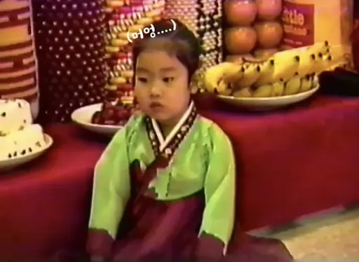

현재 나이
35세 마음은 대학교 2학년
속보
경민 씨, 35년째 무사 생존 · 청춘 연장 심사 중 · 무릎 측 “공식 입장 없다” · 케이크 초 개수 문제로 소방 당국 긴장
1992—2026 · 살아 있는 전설
경민의 반 칠순
칠순은 멀었는데 잔치는 못 참지.
서른다섯, 체력은 반납하고
흥만 재계약했습니다.
35년
생존인증
생존인증
- WHEN
- 2026.07.03
- WHERE
- 경민이의 마음속 VIP석
ARCHIVE NO. 1992
이때부터
주인공 체질
생일상 앞에서도 흔들리지 않는 눈빛.
서른다섯의 흥은 하루아침에
생긴 게 아닙니다.

1992 ARCHIVE오늘만큼은 주인공
(내일부터 다시 일반인)
DEBUT 만 나이
계산 금지 이분이 그분 ↗
CASE NO. 1992-35
사건 개요
본 자료는 본인의 과장된 증언을 토대로 작성되었습니다.
남은 청춘
무제한* *본인 주장. 근거 없음.회복 속도
2—3일 술자리 1회 기준무릎 상태
예의주시 계단 하강 시 소리 남
현장 증거 A
“어제 늦게 잤더니 오늘 하루가 사라졌어요.”
— 피고인 본인 진술GUEST TESTIMONY
축하는 짧게
놀림은 길게
증거는 남게.
마음만 전하기엔 손가락이 너무 멀쩡합니다.
140자 안에 경민을 웃기거나 살짝 울려 주세요.
!
지나친 미담은
사실관계 확인에 들어갑니다.
텅—
아직 증언이 없습니다.
첫 폭로자가 되어주세요.
USER MANUAL · VER 35.0
35세 사용설명서
잘못 다루면 “나 때는 말이야” 모드가 자동 실행됩니다.
01 / 기상
알람보다
관절이 먼저 깸
갑자기 일으키지 말고 커피를 가까이 둡니다.
02 / 충전
주말 하루는
누워 있어야 함
외출 두 건을 연속으로 잡으면 월요일에 오류가 납니다.
03 / 재생
2000년대 노래에
성능이 향상됨
첫 소절만 들려줘도 가사 전체를 자동 복원합니다.
무료 · 부작용 없음
나의 반칠순력 측정
버튼을 눌러 오늘의 35세 생존 처방을 확인하세요.
READY
검사 대기 중
오늘의 결론
어쨌든
잘 컸다
경민아!
내년에 또 만나요. 70세에도 만나요.
생존 신고는 매년, 대형 잔치는 2061년에.MADE WITH 케이크, 의리, 약간의 허위사실